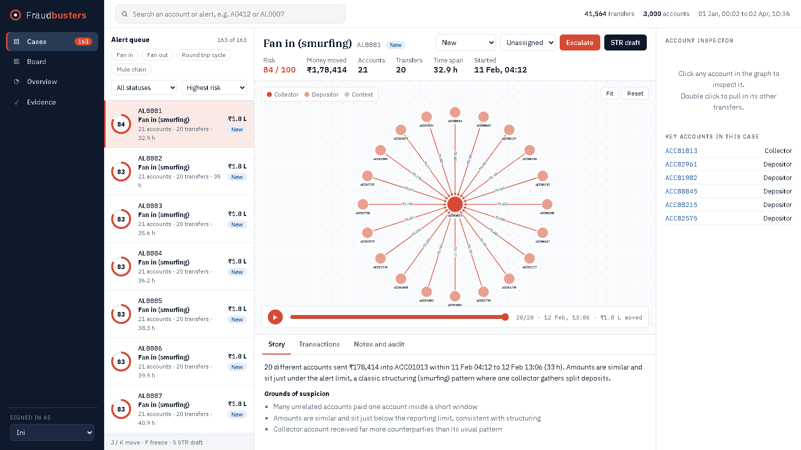

Fraudbusters: catching layered money laundering by reading bank transfers as a network, and telling real laundering apart from genuine activity that looks the same.
| Hackathon | Build Beyond '26, Gradient Club, AIML Department, BMS College of Engineering |
| Project Title | Fraudbusters: Graph Based Detection of Layered Money Laundering Networks |
| Problem Statement | PS 2.1, Graph-Based Detection of Layered Money Laundering Networks (Domain 2: FinTech) |
| Team Name | Yenrimedia |
| Team Members | Ini Shetty (1WN25CS095), Jayane Muralimaran (1BF35CS113), Deekshith R (1BM25ME037) |
| Institution | VTU, Bengaluru |
| GitHub Repository | github.com/jayane25/Fraudbuster |
| Demo Video / Live Prototype | fraudbuster-3fjf.onrender.com (live prototype) |
| Submitted On | 15 November 2026 |
Money launderers hide illegal money by layering it: splitting it into many small deposits, passing it through "mule" accounts, or sending it round in loops until its origin is lost. Each single transfer looks ordinary. The crime only becomes visible in the connections between accounts, and most bank systems never look at those connections.
Layering leaves four typical shapes in the flow of money:
| Typology | What happens | Shape |
|---|---|---|
| Fan in (smurfing / structuring) | Many people deposit small sums, kept just under the reporting limit, into one collector account | Many → one |
| Fan out (dispersion) | One account suddenly splits a lump sum to many accounts, which often pass it on again | One → many |
| Round tripping (cycle) | Money goes A → B → C → back to A to fake business turnover | Loop |
| Mule chain (rapid pass through) | Money hops through accounts that forward it within hours, almost untouched | Line |
Who it affects. Bank compliance teams, who are buried in false alerts; investigators at the Financial Intelligence Unit (FIU-IND), who need clear, explained reports; ordinary people whose accounts are rented out as money mules [3]; and genuine customers, such as charities, employers and chit fund members, whose normal activity has the same shapes and can be wrongly flagged or frozen.
Our own measurements show the cost of the current approach:
| Threshold rules (amount ≥ ₹10,000, or 10+ payments a day) | Alerts raised | Alerts that were real laundering |
|---|---|---|
| Our labelled bank, test month (15,937 transfers) | 2,012 | 18% (1,660 false alarms) |
| IBM public AML benchmark, unseen days (13,17,522 transfers) | 5,60,549 | 0.15% |
| Approach | What it offers | Where it falls short |
|---|---|---|
| Rule and threshold engines (standard in banks) | Flags a transfer above a fixed amount, or too many transfers in a day. Simple and auditable. | Blind to deposits split under the limit and to patterns across accounts; very high false alarm rates [4]. |
| Machine learning on single transactions | Scores each transfer from its own details: amount, time, account age, channel. | Still reads rows one by one, so loops and relay chains across accounts never appear. |
| Graph neural networks (for example the Elliptic and IBM AML studies [5] [6]) | Learn patterns from the whole transaction network; strong research results. | Need large labelled datasets and heavy compute; hard to explain to an auditor; return a score with no reason. |
| Case management and STR tools | Track investigations and help file reports. | Depend on the quality of incoming alerts; the investigator still reconstructs the money trail manually. |
| Information sharing between banks (for example BIS Project Aurora [4]) | Shows that analysing transfers across institutions catches far more. | Raises privacy concerns; each bank on its own still sees only a fragment of the network. |
No lightweight tool combines all of the following, which is the gap Fraudbusters fills:
Fraudbusters is an investigator workspace backed by a hybrid detection engine. Its key features:

Figure 2. Workflow: the rules find the shapes, the model weighs them with the context, and the workspace turns the verdict into action.
Step 1: graph. Every account becomes a node and every transfer a time-stamped, directed, weighted edge (NetworkX).
Step 2: rule-based shape detectors (src/aml.py):
| Detector | Rule |
|---|---|
| Fan in / fan out | 8 or more distinct counterparties within a 72 hour sliding window, and a pattern score of at least 0.55 (more parties, amounts just under ₹10,000 or very similar, large total) |
| Round trip | Money returns to its origin in 3 to 6 hops, each hop within 48 hours, each keeping 90 to 100% of the amount |
| Mule chain | Fast: 3 or more hops, each within 6 hours, 90 to 100% kept. Patient: 4 or more hops, each within 48 hours, 97 to 100% kept |
| Risk score | Typology weight × (40% pattern strength + 25% money + 20% speed + 15% number of accounts); weights: round trip 1.0, mule chain 0.95, fan in 0.9, fan out 0.85 |
Step 3: context features (src/features.py), 20 per transfer: amount, just under the limit, round amount, hour;
KYC (account type, account age, same owner); bursts in the last 72 hours; similarity of amounts; whether the receiver moves the money
on within 48 hours; whether the sender had just been paid; and whether the same pair has paid each other before.
Step 4: hybrid model (src/train_model.py). A Random Forest of 300 decision trees learns from the 20 context features
plus 8 rule features (did a detector fire, which shape, its risk and strength, accounts in any alert, threshold rule flags).
The data is split by date, never shuffled: train on 1 January to 28 February 2026 (31,480 transfers; the last two weeks are
held out only to pick the alert threshold) and test on March 2026 (15,937 transfers, 671 laundering), which the model never sees.
Step 5: verdict and action. Each alert gets an AI score, a verdict and plain-language evidence; the workspace shows the money trail, replay, case actions and the STR draft.
| Layer | Technology |
|---|---|
| Detection and ML | Python, pandas, NumPy, NetworkX, scikit-learn (Random Forest; gradient boosting for the IBM benchmark) |
| Backend | FastAPI, Uvicorn, Pydantic; fpdf2 for STR PDFs |
| Frontend | HTML, CSS and JavaScript; Cytoscape.js (graph), Chart.js (charts) |
| Quality and delivery | pytest (21 automated tests), Git and GitHub, Docker, Render (live deployment) |
Built and working end to end:
Results on the unseen test month (March 2026):
| System | Precision | Recall | F1 | Alerts |
|---|---|---|---|---|
| Threshold rules (baseline) | 0.18 | 0.53 | 0.26 | 2,012 |
| Graph shape rules only | 0.35 | 0.66 | 0.46 | 1,259 |
| ML only (no rule features) | 0.86 | 0.75 | 0.80 | 583 |
| Hybrid: rules + ML (Fraudbusters) | 0.89 | 0.87 | 0.88 | 653 |
| Counted per case (March) | Rules only | Hybrid |
|---|---|---|
| Laundering schemes caught | 46 of 55 | 53 of 55 |
| Genuine look-alikes wrongly flagged | 39 of 91 | 0 of 91 |
| Genuine look-alike transfers flagged | 44% | 1.3% |
| IBM benchmark (unseen 8 to 10 Sep 2022) | Threshold | Ours |
|---|---|---|
| F1 | 0.003 | 0.42 |
| Alerts that are real laundering | 0.15% | 42% |
| Alerts to review | 5,60,549 | 1,556 |
The hybrid's accuracy is 99.0% and its PR-AUC 0.93; we lead with F1 because laundering is rare (4.2% of test transfers), so a model that flags nothing would still score 95.8% accuracy. In early-warning replay, 180 of 200 schemes were flagged while still in progress (smurfing a median 36 hours before the last deposit). In the consortium simulation, sharing hashed account IDs across three banks raised round-trip and mule-chain recall to 100%.
Challenges we faced and how we solved them:
| Phase | Timeline | Work |
|---|---|---|
| 1. Pilot | Months 1 to 2 | Run on a partner bank's anonymised data under NDA; re-validate the KYC features; analyst login and roles; move case data to PostgreSQL; tune thresholds per bank. |
| 2. Real time and scale | Months 3 to 4 | Stream transfers as they happen (message queue); graph database (Neo4j) for millions of accounts; model monitoring and retraining; extend the hybrid model to the IBM benchmark. |
| 3. Deeper intelligence | Months 5 to 6 | Graph neural network experiments alongside the explainable model; AI-written case notes; more typologies (trade-based laundering, crypto off-ramps). |
| 4. Ecosystem | Months 7 to 12 | Privacy-safe consortium across banks using hashed account IDs; STR export compatible with FIU-IND FINnet; security review and compliance certification. |
Resources needed:
| Goal and target | How Fraudbusters contributes | Impact indicator |
|---|---|---|
| SDG 16: Peace, Justice and Strong Institutions. Target 16.4: significantly reduce illicit financial flows [7] (primary) | Exposes the networks that move illicit money, so banks can stop flows while they are still in progress and report them with clear evidence. | Laundering schemes caught; F1 against the rule baseline; money still moving when flagged |
| SDG 8: Decent Work and Economic Growth. Target 8.10: strengthen domestic financial institutions [8] | Gives banks a sharper and cheaper way to run anti-money-laundering checks, and avoids freezing genuine customers such as charities and employers. | False alarms removed; genuine look-alikes cleared |
| SDG 17: Partnerships for the Goals. Target 17.1: strengthen domestic resource mobilisation [9] | Money pulled back from hidden channels into the open economy can be taxed; the consortium design lets banks cooperate without sharing customer identities. | Value of flagged flows (₹); cases spanning more than one bank |
All prototype, machine learning, red team, early warning and consortium figures come from our own code, published at
github.com/jayane25/Fraudbuster (results in data/ml_results.json and data/ibm_model_results.json).